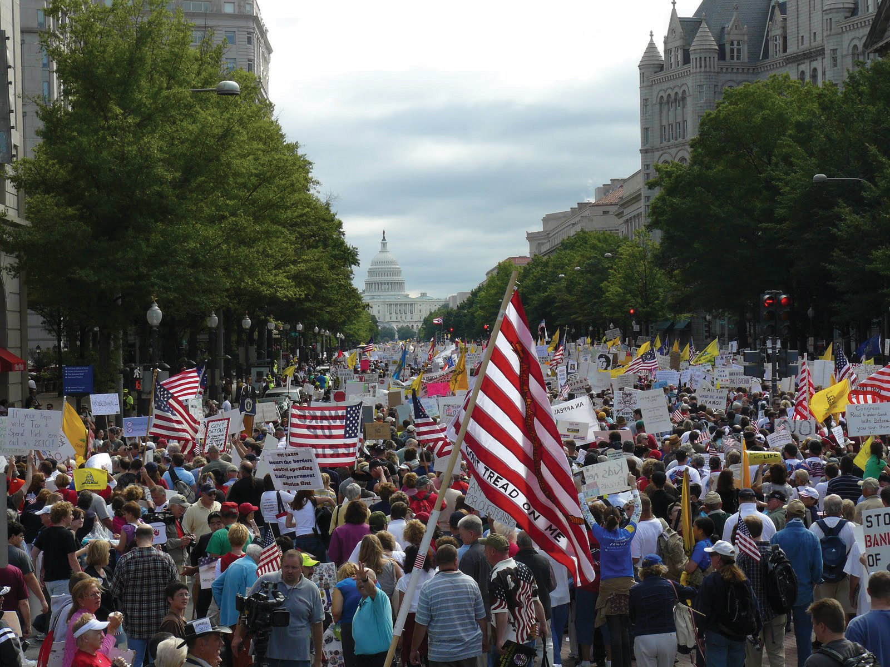
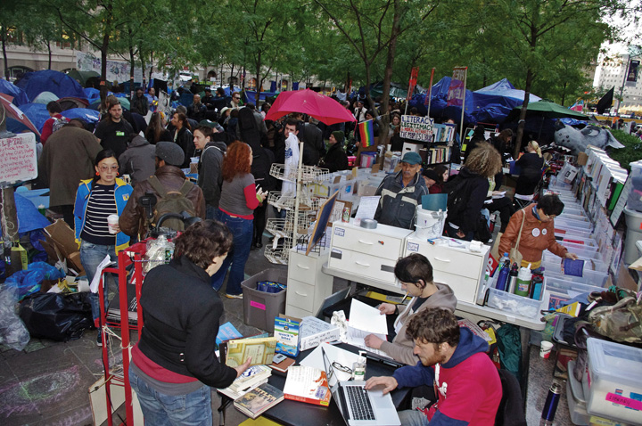

A century and a half after the end of slavery, issues of race and class continued to divide America. In the wake of white flight, the proliferation of private schools, and court decisions that limited busing as a method of achieving racial diversity, America’s urban schools were more segregated in the twenty-first century than prior to the 1954 Brown v. Board decision. In 1950, the richest 1 percent of Americans controlled 20 percent of the nation’s wealth, and top executives usually made between ten and twenty times the average wage of entry-level employees. Five decades later, CEO pay often exceeded 250 times the annual wages of workers, while the wealthiest 1 percent controlled a third to half of the nation’s wealth. Poverty rates increased during the same time period, while the working class had increased their wages only when measured against the lower standard of living of much earlier decades. The rich had grown much richer, the poor were more prevalent, and those in between clung to middle-class status by becoming dual-wage households.
Lack of economic equality was reflected in the political system in ways much more difficult to document than the overt disenfranchisement that had given rise to Freedom Schools and Fannie Lou Hamer. Given the importance of securing political donations in modern elections, the poor and middle-class found their interests circumscribed by those who could provide the financial resources a candidate depended upon to be reelected. For several decades, reformers attempted to place limits on the amounts and types of political donations campaigns could accept. These reformers hoped these prohibitions would force political leaders to value the views of voters over interest groups.
Given the decline of labor unions, which had traditionally made large donations to the Democratic Party, and the success of Republicans in soliciting sizable political donations from corporations, leading Democrats made dozens of attempts to place stricter limits on political donations throughout the 1980s and 1990s. Arguing that these limits were politically motivated and a violation of free speech, Republicans mobilized each time to defeat these bills. Several bipartisan attempts to regulate campaign finance were also defeated, such as a 1997 bill sponsored by Arizona Republican John McCainArizona senator who took the seat previously occupied by conservative Senator Barry Goldwater. Like Goldwater, McCain would win the Republican nomination for president but lose in the general election to a Democratic candidate. and Wisconsin Democrat Russell Feingold.
These measures sought to rein in “soft moneyRefers to donations that are not regulated by the Federal Election Commission because they cannot be used to support an individual campaign or advocate the election of a particular candidate.,” a term for donations that are given to a political party or cause rather than directly to an individual politician’s campaign. Soft money usually takes the form of union or corporate donations and is generally exempt from limits (presently around $2,500 per candidate per election) that apply to contributions that are made directly to a specific candidate. The 1997 McCain-Feingold bill targeted “soft money” but was defeated by a Republican filibuster. The willingness of Senator McCain to confront the leaders of his own party earned him a reputation as a “maverick.”
McCain and Feingold succeeded in passing a campaign finance reform bill in 2002, which placed many limits on soft money. However, many of these provisions were easily circumvented by other methods of political fundraising. In response to the past four decades of campaign-finance reforms, thousands of political organizations were created as part of an effort to further a political agenda without being subject to the rules of the Federal Election Commission. The most common method of evading regulations is for an organization to finance advertisements that sound very similar to a candidate’s message but do not explicitly endorse that candidate. For example, an advertisement might suggest that candidate A has a reputation for integrity while candidate B has a criminal record. Other advertisements might connect specific issues or policies with a particular candidate, as long as it does not explicitly counsel its audience to vote for that candidate.
Many restrictions against these kinds of advertisements were considered in each session of Congress at the turn of the twenty-first century. Each restriction weighed the desire to limit corruption and unsavory methods of financing campaigns against concerns regarding the protection of free speech. Many Americans recognized that limits on individual campaign contributions were meaningless if unlimited donations might be made to anonymous organizations covertly working to aid a particular campaign. President Barack Obama backed an effort in 2010 that would have required disclosure statements for these kinds of advertisements. It also prohibited foreign entities and recipients of government contracts from making political contributions. Critics of the bill suggested it was politically motivated and violated standards of free speech. Although the bill would have likely passed given its support by the Democratic majority in Congress, the bill was defeated when every Republican senator joined efforts to prevent the measure from reaching the floor for a vote. Later that same year, the Supreme Court reversed prohibitions that had prevented corporations from using unlimited funding to produce and distribute political messages about candidates.
The stock market had rapidly fluctuated during the last three decades, producing record bull and bear markets alike, but generally rising higher at a rate that seemed unnatural to some economists. The value of homes in many urban markets had risen by 10 to 20 percent each year, which caused a boom in real-estate speculation. As had occurred during the 1920s, few Americans were saving money, while others used leverage in dangerous ways. Some families took out multiple mortgages, leveraging their homes to purchase stock on margin or invest in more real estate. Unlike the 1920s, however, consumers were also using credit cards to borrow for everyday purchases, while most college students and their families financed a large portion of their educational expenses with federally backed loans. Other modern financial products, such as second mortgages and home-equity loans, also increased the risk of going into debt.
Perhaps the most remarkable new finance mechanism was the zero-equity home loan. These were loans that did not require a down payment and were increasingly paired with adjustable-rate mortgages (ARMs). These risky types of loans were marketed to those who had dreamed of purchasing a home but had been turned away by traditional lenders. These individuals often did not have a very sophisticated idea of finance and were happy to accept any home loan. They were especially happy to find that they had been approved to buy a brand-new home with no money down. The terms of most ARMs were seldom fully explained by salespeople who were paid on commission. Many of the companies that offered these high-risk loans later sold these loans to other financial companies. The banks that purchased these loans failed to investigate each individual loan or simply believed that any investment backed by a mortgage was safe. Even if home owners defaulted, they reasoned, the bank would get to keep the house, which would have likely increased in value. In some cases, loans were designed to force home buyers to default after a certain number of years, thereby giving the banks ownership of the real estate while keeping all of the payments the family had made up to that time.
It was a fail-proof system for the banks and mortgage companies so long as home prices continued to increase. But in 2005, housing prices stagnated as fewer and fewer buyers entered the market, and by 2007, these prices began tumbling. A family who had purchased a $250,000 home with no money down found they were $250,000 (or more) in debt for a house that was now valued at $150,000. Many chose bankruptcy to this upside-down situation, which left the banks with homes that were worth much less than the money they had originally loaned.
Other home owners tried to fulfill their obligations but found their zero-down adjustable-rate mortgage contained some unpleasant surprises. Although they should have realized at the time, most ARMs came with loan-repayment rates that jumped from a low introductory rate of 4 percent to 6 or even 8 percent. For example, the interest alone on a monthly mortgage payment for a $250,000 home would jump from $833 at 4 percent to $1,458 at 7 percent. Banks that had purchased these risky loans had done so believing that if the family in question could no longer pay their mortgage, the bank would at least be able to take possession of a house that was worth $250,000 or more. Instead, those that defaulted were often abandoning both a bad loan and a home that was worth only a fraction of what they owed.
In the past, home loans were made by local banks that faced the prospect of losing money or even going out of business if they loaned money to families who could not pay. By the early twenty-first century, home loans were made by a variety of financial institutions, but usually ended up in the hands of only a few firms. The government was supposed to regulate the health of this system, but had increasingly reduced the restrictions on lenders due to political pressure and the historic gains of the stock market and real-estate prices.
Critics warned that the health of the nation’s economy was directly related to the stability of a handful of banks and investment firms, but until 2007, those firms were making record profits, which masked the symptoms of disaster from all but a few economists no one wanted to hear. Warnings that America’s leading financial firms had unwittingly purchased billions of dollars in loans they knew very little about were ignored, while government regulations were regarded as restraints that prevented the economy from reaching its full potential. As a result, the news that venerable New York investment bank Bear Stearns faced bankruptcy sent a wave of panic throughout the system in 2008.
All of a sudden, the United States awoke to the very disturbing reality that nearly all of its leading banks were at risk of default, which threatened to cause the failure of the entire banking system. Because these banks were insured by the federal government, the failure of one major institution like Bank of America might cost taxpayers hundreds of billions of dollars and begin a tidal wave of other banks to fail. The federal government stepped in and negotiated the takeover of Bear Sterns by JPMorgan Chase. IndyMac Bank, the nation’s largest mortgage lender soon failed, which was followed by federal bailouts of Freddie Mac and Freddie Mae—two government regulated corporations that bought and sold mortgages from banks. Dozens of other leading institutions were nearing insolvency. AIG was the largest insurance firm in the country and had invested heavily in mortgage-backed investments. Facing the prospect that AIG would no longer be able to pay insurance claims, the Federal Reserve took over AIG’s financial obligations by essentially purchasing the heavily indebted company.
The panic spread from banking and insurance to the entire stock market, causing corporations in industries that were already struggling such as auto manufacturing to collapse had it not been for another massive federal bailout. Oil prices skyrocketed, while the latest round of World Trade Organization talks in Doha, Qatar, failed to reduce international trade barriers. A host of states and cities joined California and the former industrial cities of the Rust Belt in reporting that they were in danger of defaulting on the loans they had made to bondholders. Private and public companies responded by downsizing their workforce, while consumers who had money were understandably reluctant to make large purchases, much less invest in stocks or bonds. The Dow Jones average fell from above 14,000 to nearly 8,000 in just over a year. Retirees returned to the labor market, while those who had planned to retire remained at work, resulting in fewer jobs for recent college graduates who lacked the experience of older workers.
The media soon explained that a new and complicated type of investment was partially to blame and had made a handful of speculators and industry insiders very rich. These investments were called derivatives because they derived their value from the occurrence of a certain event—in this case, the failure of thousands of mortgages. These new investments were beyond the understanding of many experts who worked in the financial service industry and beyond the realm of overburdened government officials whose powers to regulate the banking industry had been vastly reduced by both Republicans and Democrats over the past three decades. These derivatives might have reduced risk had they been purchased by the same banks that held the mortgages their value was derived from—a sort of insurance policy that would compensate the banks if the loans they held ever defaulted.
Many derivatives were bought and sold by speculators betting on a market collapse. Given the incredibly shaky foundation upon which the entire housing market had been constructed, it seemed to many as if some in the investment industry had orchestrated the entire debacle. After all, the only way that many of these loans would not default was if home values kept rising at historically unprecedented rates while new home owners could keep paying mortgages that increased each year. As the media and political leaders kept reporting about hedge fund millionaires and bank executives with multimillion-dollar bonuses, the indignation of many Americans who feared the loss of their homes and jobs mixed with fear to form a volatile mixture.
In late September and in the midst of election season, Bush officials in the Treasury Department crafted legislation that would set aside $700 billion to “bail out the nation’s largest banks, investment firms, and insurance companies.” Debate on the Emergency Economic Stabilization ActA controversial bill authorizing the Treasury Department to use as much as $700 billion to “bail out” banks and investment firms it deemed could have an adverse effect on the national economy if they defaulted on their loans or became insolvent. revealed both the panicked sense that failure to provide these funds would lead to a complete collapse of America’s economic system and the fact that few in government really understood that system. Even though many in Congress protested that the bailout bill had never been fully explained, each day the financial headlines grew more dire, and the bill passed with begrudging but bipartisan support.
The bill provided little assistance for smaller banks, and hundreds of these institutions collapsed. Those banks that had acted prudently survived but were not fully rewarded according to free-market principles by the failure of their larger and more irresponsible competitors. Critics pointed out that many aspects of the bailout were Socialistic—by loaning money to some of America’s largest businesses, the government was effectively becoming the owner of these enterprises. Others claimed these extreme measures were temporary and necessary to save the free market and prevent a second Great Depression.
Libertarians believed that the businesses that had made poor investments should face the same fate of millions of families that had taken on more debt than they could afford. As thousands faced foreclosure and bankruptcy each day, it seemed unfair to most Americans that the largest banks were getting federal bailouts because the entire economy was so dependent on their survival. Others turned away from positive explanations and toward populist anger. All they knew was that handful of speculators in the derivative market became rich overnight, while bank executives who were seemingly driving the US financial system over a cliff they helped build were still making millions in bonuses. Meanwhile, the stock market was collapsing each day, and millions of US families were one mortgage payment away from homelessness.
If one could engineer a perfect economic storm, it would look much like the financial crisis of the late 2000s. The fact that it coincided with an election year increased the drama as both parties searched for an understanding of what had happened and how to fix it. The Democratic primaries promised drama regardless of the financial catastrophe, as New York Senator Hillary Clinton was poised to become the first woman to be nominated by a major political party. The primary election was tightly contested and each candidate sought the endorsement of political leaders. Ironically, the backing of leading talk show host Oprah WinfreyEntrepreneur, actress, and talk show host who rose to national prominence with her skill in addressing sensitive social issues and uplifting message of personal and community empowerment. Winfrey is one of the wealthiest Americans and perhaps the most independent public figure on television given her ownership of the company that produces her shows, Harpo Productions. may have been the most impartment endorsement of all. The support and publicity of Oprah and other public figures helped a first-term senator from Illinois rise from relative obscurity and secure the Democratic nomination. Barack ObamaA charismatic African American politician and former community organizer in Chicago whose improbable career led him to become the 44th president of the United States after only one incomplete term in the US Senate. inspired many with his charisma and message of “change” during the primary election. Obama became the first African American to secure the nomination of a major political party. The nomination led many to wonder if racial diversity had finally become a nonissue, or perhaps even a positive attribute in US politics.
Meanwhile, the Bush administration attempted to balance its attempts to promote Republican candidates with managing the financial crisis. The Bush administration fully endorsed the $700 billion bailout plan and supported additional measures to assist General Motors and Ford, along with AIG and many other large corporations. Between each of these bailouts and the increasingly unpopular war in Iraq, the failure to capture bin Laden, and growing sentiment that the Bush administration had jeopardized the economic health of the nation through deficits and deregulation of the financial industry, Bush’s approval ratings exceeded the lows of the Nixon administration. As a result, Republican nominee for president John McCain distanced himself from the Bush administration along with most of the rest of his party.
Figure 14.17

Chicago politician and Illinois Senator Barack Obama became the 44th President of the United States following his 2008 victory over Arizona Senator John McCain.
McCain was an Arizona senator with decades of experience, a fact that contrasted sharply with the much younger Obama, who was still serving his first term in the Senate. McCain was also a national hero who had endured years of torture in a prisoner of war camp in Hanoi. At one point during an early debate between a dozen candidates for the Republican nomination, McCain stunned his opponents with his straightforward response to a difficult question. Allegations that the United States had used techniques such as water-boarding to interrogate prisoners at Guantanamo Bay led to a heated discussion among the many candidates regarding the morality of torture to secure information that might derail a terrorist attack. After each candidate seemingly sought to outdo the other with tough talk about what they would do to US enemies, McCain solemnly replied that the United States could not stand for torture. The room went silent.
As a soldier, McCain had endured daily beatings for his refusal to sign his name to enemy propaganda that slandered the United States. As a candidate, he made it clear that his nation must not be guilty of the same crimes. McCain’s principled stand in opposition to the nationalistic posturing of his opponents reminded voters of his service to the nation and his willingness to stand up to his own party in the past. McCain had been branded as a “maverick” for his support of campaign finance reform and numerous other measures that were strongly opposed by the Republican establishment. Given the sudden unpopularity of that establishment in 2008, McCain’s unorthodox style resonated with voters and gave him an early lead in the polls.
Both candidates ran on a platform of “change.” The Obama campaign used the word heavily along with the elusive phrase “hope,” which appealed to many, given their frustrations with the Bush administration and what appeared to be the potential collapse of the banking system. As a young senator from Illinois, Obama had warned of the dangers of deregulation, which made him seem prophetic, yet the candidate failed to communicate a specific plan for how he would turn the economy around. The McCain campaign sought to emphasize its candidate’s reputation as a maverick to distance the aging senator from the unpopular Bush administration he had usually supported. McCain was most vulnerable on questions regarding the economy because he had supported most of the deregulation efforts that led to the financial collapse. He had also received significant campaign contributions from the director of a failed financial institution that was later arrested for trying to use money to influence government regulators. McCain was cleared on ethics charges in relation to the scandal but admitted that he had acted in a way that created the appearance of impropriety.
The 2008 election would demonstrate that race was still a major issue as Southern whites rallied behind Republican nominee John McCain in far greater percentages than other Republicans or conservatives had enjoyed. McCain’s outspoken vice presidential candidate Sarah PalinJohn McCain’s vice presidential candidate and former governor of Alaska who stepped down from office before her term was complete in order to pursue a career as a national political figure and consultant for Fox News. Palin alienated many moderates but retains a loyal following on the far-right of the Republican Party through organizations such as the Tea Party. quickly garnered the support of many evangelicals and the extreme right of the Republican Party, but these were not voters that were likely to support Obama’s candidacy. Palin’s folksy but clichéd polemics and unsubstantiated attacks on her opponent as a “pal” of terrorists soon galvanized the nation, with most moderates turning away from the McCain camp. McCain sought to distance himself from the often racist appeals of some of his supporters, but was perhaps too cautious in his efforts to do so while still profiting from their race baiting. Sarah Palin displayed even less finesse as she combined the tactics of Nixon’s early smear campaigns with the former president’s Southern Strategy, openly playing to white racial fears by creating the image that nonwhite America was using federally subsidized programs such as ACORN to capture the 2008 election.
The malice of the anti-Obama backlash the McCain-Palin campaign had encouraged soon expanded in ways that harmed the Republican campaign. Despite McCain’s belated attempts to correct misinformation about Obama’s religious beliefs and citizenship, the American people increasingly viewed the Republican candidates as responsible for the negative turn in the 2008 election. Obama responded to the backlash in such a mild manner that many minorities and liberal whites were disappointed. However, the future president’s continued optimism and charisma stood in increasing contrast to the attacks of his detractors. Late in the campaign, Obama delivered a well-received speech in which he asked Americans to make sure that race baiting would fail. “We can let race divide us,” Obama exulted, or “we can come together and say, ‘Not this time.’” In the end, Americans expressed unfavorable opinions about the techniques used by the McCain-Palin candidacy. The 2008 election also resulted in the first African American president as Obama won with 53 percent of the popular vote. The new president inherited the worst economic crisis since the Great Depression, record deficits, and two wars that defied all military solutions and had sharply divided the American people. Perhaps the president’s biggest obstacle, however, was finding a way to translate his lofty rhetoric and the extremely high expectations he had created into support for policies in an extremely polarized political climate.
Obama hoped to pass sweeping legislation that would finally reform the health care system—legislation that had eluded his party for seven decades. But first, Obama focused on the continued economic turmoil of Wall Street and Main Street. In February of 2008, Congress approved a second major stimulus bill. The American Recovery and Reinvestment Act provided nearly $800 billion to ailing state and local governments for a host of projects aimed at providing jobs and bolstering the nation’s infrastructure and educational systems. The bill remained controversial, although many believe that it along with previous measures helped to prevent a more serious economic downturn. Several leading Republicans were angered by continued federal spending that exacerbated the national debt, which exceeded $10 trillion.
Obama’s health care plan was even more controversial. Many on the political right labeled the plan as “Obamacare” and spread false information about some of the plan’s provisions. Some even distorted a section providing coverage for counseling services for terminally ill patients as some sort of mandatory euthanization scheme for senior citizens. A new grassroots movement known as the Tea Party emerged in opposition to the Obama health care bill. Although the health care plan passed the overwhelmingly Democratic Congress, this occurred only after the president removed the most significant reforms, such as a health insurance plan administered by the government. Obama also announced that all combat troops would return from Iraq by 2010, which also concerned many on the right. The president also announced a surge of 30,000 troops in Afghanistan and a renewed effort to target Al Qaeda and the Taliban.
On May 1, 2011, US special forces located and killed Osama bin Laden in Pakistan, raising questions about the extent of Al Qaeda support throughout the region. The news was greeted by most Americans as a hopeful sign that terrorism would decline. Others were alarmed at the degree of revelry that some Americans displayed, which seemed inappropriate to many and likely to embolden America’s enemies.
Figure 14.18
The Tea Party emerged as a grassroots movement of the political right. Its members generally opposed President Obama and shared the perception that liberals were moving the nation toward Socialism.
Estimates of the total cost of the wars in Iraq and Afghanistan continued to lead many to question the way the war on terror was being waged. As of 2011, more than 6,000 US soldiers, 2,000 US contractors, and an estimated 130,000 Iraqi and Afghan citizens had perished. The Congressional Budget Office estimates the total cost of the wars at $2 trillion, while researchers at Brown University believe that the long-term costs of caring for the hundreds of thousands of injured veterans will raise the cost to $4 trillion. As Obama announced the return of all American military personnel from Iraq by early 2012, neither Iraq nor Afghanistan appeared to most Americans to be on a clear path toward democracy. Meanwhile, the expenditures of the Department of Homeland Security were continuing to rise, along with the growing threat of terrorism.
The news of bin Laden’s death immediately boosted President Obama’s approval ratings, but the polarization that divided most Americans remained. Emotional debates ensued that reflected a cultural war between the right and its hypernationalistic rhetoric and the left with its call for greater tolerance of diversity and support for President Obama. That support for the president slowly declined after three years in office that saw the president devote most of his efforts to winning over his conservative critics. Many on the left felt betrayed by the failure of the president to follow through with promises to immediately repeal DADT, close Guantanamo Bay, end the war in Iraq, and enact stricter regulations on banks and investment firms. In addition, the debates during the summer of 2011 regarding the debt ceiling reflect anxieties about the health of the economy and the mounting federal debt that exceeded $14 trillion.
Economic concerns and an ongoing cultural war manifested themselves in numerous ways during the president’s final years of his 2011–2013 term. The president’s support of a proposed Islamic community in the same Manhattan neighborhood that had been home to the Twin Towers angered many conservatives who began to fear that their president had betrayed the memory of September 11. Others defended the president out of recognition that cherished values of freedom of expression and religion were at stake but still expressed reservations about the legitimacy of the Islamic faith.
Figure 14.19
Toward the end of 2011, a grassroots movement opposed to the unequal distribution of wealth in the United States began a protest outside the New York Stock Exchange. The Occupy Wall Street movement quickly spread from New York to local communities, attracting a variety of issues and supporters.
Demagogic talk show hosts continued to make hundreds of comparisons between the Obama administration and the methods of Adolf Hitler and Joseph Goebbels. Similar comparisons were made by some on the political left toward conservatives. For most Americans, however, the examples these demagogues used to support their analysis demonstrated both insensitivity to the past and a suspension of critical thinking. Most Americans were disturbed by the crude comparisons of American politicians to these tyrants and the ignorance of world history demonstrated by those who parroted these demagogic pundits. A few within the Tea Party movement such as Sarah Palin revealed and then celebrated a level of historical illiteracy that shocked many Americans and became fodder for late-night talk show hosts.
As Palin demonstrated in 2011 with her assertion that Paul Revere was trying to warn the British, presumably about their own troop movements, interpretations of history continue to reveal a great deal about the present. A June 2011 effort to commemorate the 1921 coal miner’s rebellion at Blair Mountain, West Virginia, personifies many of the tensions between the political left and the right and may be useful as a case study to explore the causes and consequences of modern political alignment. Blair Mountain was the site of one of the most violent labor conflicts in history. The land was recently taken off the list of protected historical sights and was scheduled to be developed by mining companies by using explosives to eliminate the top of the mountain. Many working-class West Virginians sided with the coal companies, who presented the protesters as liberals and outsiders with an agenda to eliminate coal jobs in the name of environmental protection. Given the massive layoffs of the past few decades, the desire of many environmentalists to reduce coal consumption, and the way many working-class residents of the state have been caricatured, the defensiveness of this perspective carried its own logic.
At the same time, the loss of relatively high-paying jobs in coal mining and other industries and the assault against the dignity of labor mirrored the cultural and economic issues surrounding the 1921 revolt. Much like their predecessors, modern coal companies were seeking ways of reducing labor costs. Mountaintop removal mining is a technique that utilizes dynamite to blow away the tops of mountains, known euphemistically as “overburden.” The technique eliminates the need for skilled miners and engineers who are also more likely to be well-paid and unionized laborers. For this reason, coal companies favor mountaintop removal and other forms of strip-mining because it reduces labor costs.
As a result, many who depend on the coal industry for their livelihood were once again forced to choose between coal operators who they hoped would employ them in the near-term and progressives who viewed labor and capital as hostile toward one another. The progressive vision offers the possibility of better working conditions and environmental protection but has often been expressed in paternalistic ways that alienated many working-class Americans. Similar to those who sought to create a partnership between the liberal reformers and the working class, modern progressives face the challenge of creating partnerships across class lines in a cultural war that continues to polarize America along a liberal-conservative divide.